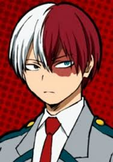

Обладатель уникальной прически, рассеченной на белый и красный цвет ровно посередине. Тодороки — сын Героя Номер 2 с огненной бородой, Старателя, вечного соперника Всемогущего. В надежде вырастить сильного наследника, Старатель, обладатель огненной причуды, насильно женился на женщине-герое (вероятно, обладательнице ледяной причуды). В результате этого союза родился Шото, которым Старатель гордился и всячески старался сделать из него величайшего героя, способного превзойти Всемогущего. Однако мать Шото ненавидела своего мужа и, видя отголоски его причуды в своем сыне, облила левую часть лица Шото кипятком, после чего Старатель сослал ее в психушку.